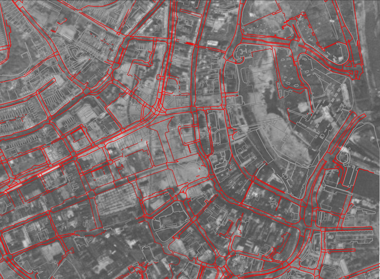

Blog
Ṽīḗẇīƞɠ ƥǿşŧş ƀẏ Gareth Dean
To Visualise or not to Visualise?
Or perhaps more accurately how to visualise is a question that has been much debated by the City Witness team recently. Visualisation, the reconstruction of how things might have looked, to aid the interpretation of historical and archaeological interpretations is nothing new. What is new is the range of techniques available to produce reconstructions. Examples of this can be found on a number of websites taking many forms from the schematic to photorealistic(e.g. http://www.antiquity.ac.uk/projgall/lilley/; http://www.portusproject.org/blog/2012/12/reconstructing-portus/; http://www.heritagetechnology.co.uk/gallery; http://www.english-heritage.org.uk/professional/research/archaeology/graphics/). However we approach representing the past it has to be done with care and consideration. Academically the questions relating to how the past has been, and can be, visualised has been a source of debate.This has led to the drafting of documents to provide guidelines for the creation of visualisations such as the London Charter (http://www.londoncharter.org/) or the guidelines by the Archaeological Data Service (http://guides.archaeologydataservice.ac.uk/g2gp/Vr_Toc). A recent publication in Internet Archaeology (Giles et al 2012 http://intarch.ac.uk/journal/issue32/1/3.2.html) highlights many of the concerns over the reconstruction and visualisation of evidence.
The Swansea Blitz
This aerial photograph (see Catherine's post about the Swansea Council meeting), which can also be found under the timeline feature of Google Earth, shows the areas (light grey) that were destroyed during the blitz of February 1941.
- Ƥȧɠḗ 1 ǿƒ 2
- ←
- 1
- 2
- →